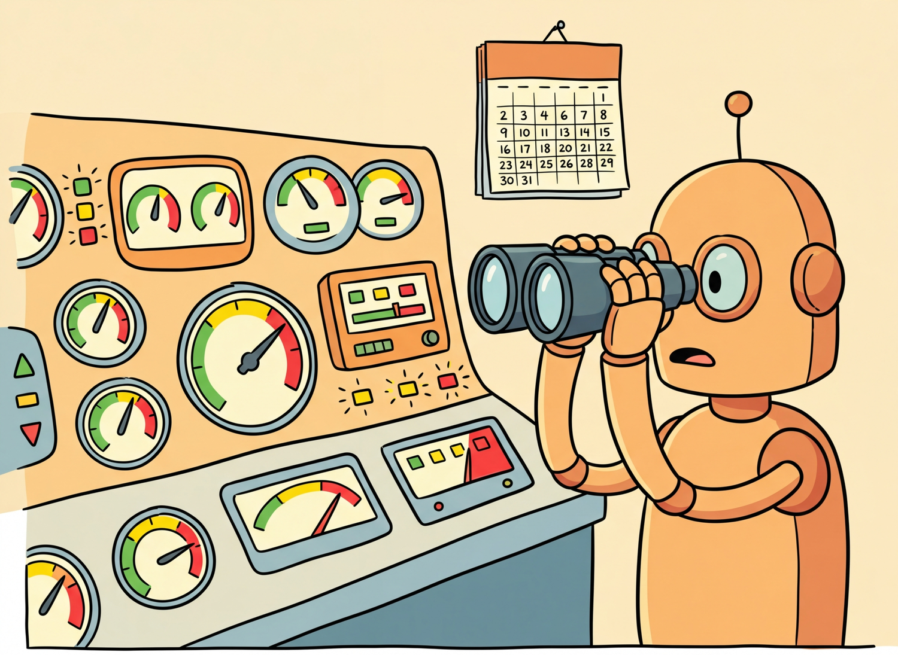

"Your model did not break. It just quietly became a different model when the provider updated their weights last Tuesday."
Sentinel, Quietly Drifting AI Agent
LLM applications degrade silently. Unlike traditional software that crashes loudly when something breaks, LLM systems can quietly produce worse outputs without any errors or exceptions. Provider model updates change behavior overnight, embedding models get swapped, user query distributions shift, and prompts accumulate ad-hoc patches that interact in unexpected ways. Building on the observability infrastructure from Section 27.7, this section covers the types of drift unique to LLM systems and how to detect them before users notice the degradation.
Prerequisites
This section builds on the observability material from Section 27.7. Understanding fine-tuning from Section 14.1 and alignment from Section 16.1 helps with understanding evaluation of model adaptation quality.

27.4.1 Types of Drift in LLM Systems
The single most impactful drift detection measure you can implement today is a nightly cron job that runs 50 golden test prompts against your production endpoint and compares the outputs to a baseline snapshot. If the average similarity score drops below a threshold, alert your on-call engineer. This catches provider model updates within hours instead of weeks.
Drift in LLM applications occurs when the behavior of any component changes over time without intentional modification. Unlike classical ML systems where data drift and concept drift are the primary concerns, LLM systems face several additional drift categories that are unique to the LLM technology stack. categorizes the three types of drift in LLM systems.
OpenAI's silent update to GPT-4 in March 2024 caused widespread production failures across companies who had calibrated their prompts to the previous version's quirks. The AI community now treats "same model name, different weights" as a known hazard, much like expired milk with a future date on the carton.
LLM drift has more attack surfaces than classical ML drift. In classical ML, drift typically means the input data distribution shifted. In LLM systems, drift can come from at least four independent sources: the model itself (silent provider updates), the prompts (incremental edits by teammates), the retrieved knowledge (new documents in the RAG corpus), and the user population (different types of queries over time). Each source requires its own monitoring strategy. The most dangerous form is model drift from provider updates, because it happens without any action on your part: the evaluation framework from Section 27.3 should run continuously, not just at deployment time.
To detect drift quantitatively, two statistical measures are commonly used. Both compare a reference distribution (collected during a healthy baseline period) against the current observed distribution:
Distribution Drift Detection Metrics.
Two common measures for detecting distribution shift between a reference distribution P and a current distribution Q:
\operatorname{KL} Divergence.
$$D_{\operatorname{KL}}(P || Q) = \sum _{i} P(i) \cdot \log(P(i) / Q(i))$$KL divergence is asymmetric and unbounded; values above 0.1 typically warrant investigation.
Population Stability Index (PSI).
$$PSI = \sum _{i} (P(i) - Q(i)) \cdot \log(P(i) / Q(i))$$PSI is symmetric and easier to threshold: PSI < 0.1 indicates negligible drift, 0.1 to 0.25 indicates moderate drift (monitor), and PSI > 0.25 indicates significant drift (investigate or retrain).
27.4.2 Prompt Drift Detection
Prompt drift occurs when the system prompt or prompt templates gradually change over time through incremental edits, accumulating special-case instructions, or growing context. Each individual change may seem harmless, but the cumulative effect can significantly alter model behavior. Without version control and monitoring, these changes are invisible.
# Define PromptDriftMonitor; implement __init__, register_template, check_template
# Key operations: prompt construction
import hashlib
import json
from datetime import datetime, timezone
from difflib import unified_diff
class PromptDriftMonitor:
"""Monitor prompt templates for unauthorized or untracked changes."""
def __init__(self):
self.known_hashes: dict[str, str] = {} # template_name -> hash
self.change_log: list[dict] = []
def register_template(self, name: str, template: str):
"""Register a prompt template and its hash."""
h = hashlib.sha256(template.encode()).hexdigest()[:16]
self.known_hashes[name] = h
return h
def check_template(self, name: str, current_template: str) -> dict:
"""Check if a template has drifted from its registered version."""
current_hash = hashlib.sha256(current_template.encode()).hexdigest()[:16]
registered_hash = self.known_hashes.get(name)
if registered_hash is None:
return {"status": "unregistered", "name": name}
drifted = current_hash != registered_hash
result = {
"name": name,
"drifted": drifted,
"registered_hash": registered_hash,
"current_hash": current_hash,
"checked_at": datetime.now(timezone.utc).isoformat(),
}
if drifted:
self.change_log.append(result)
return result
def compute_template_metrics(self, template: str) -> dict:
"""Compute structural metrics for a prompt template."""
return {
"char_count": len(template),
"word_count": len(template.split()),
"line_count": template.count("\n") + 1,
"variable_count": template.count("{"),
"instruction_density": round(
sum(1 for w in template.lower().split()
if w in {"must", "always", "never", "should", "ensure"})
/ max(len(template.split()), 1), 4
),
}
The same result in 5 lines with Langfuse prompt management, which versions and monitors prompts automatically:
# pip install langfuse
from langfuse import Langfuse
langfuse = Langfuse()
# Fetch a versioned, tracked prompt from Langfuse
prompt = langfuse.get_prompt("rag-system-prompt", version=3)
compiled = prompt.compile(context=context, query=query)
# Langfuse tracks which prompt version was used in each trace,
# enabling drift detection and A/B comparison in the dashboardAPI providers (OpenAI, Anthropic, Google) regularly update their models, sometimes changing behavior significantly while keeping the same model name. A prompt that worked perfectly with gpt-4o-2024-05-13 may produce different results with gpt-4o-2024-08-06. Always pin model versions in production, monitor the system_fingerprint field in responses, and run your evaluation suite whenever a new version is released before adopting it.
27.4.3 Embedding Drift in RAG Systems
Embedding drift is particularly insidious in RAG systems (Chapter 18) because it can happen without any code changes. The most common cause is updating the embedding model (Chapter 17) (or the provider silently updating it), which changes the vector space. Documents embedded with the old model and queries embedded with the new model will have mismatched representations, degrading retrieval quality.
# Define EmbeddingDriftDetector; implement __init__, _compute_embeddings, _pairwise_similarities
# Key operations: embedding lookup
import numpy as np
from typing import Callable
class EmbeddingDriftDetector:
"""Detect drift in embedding model behavior using reference queries."""
def __init__(self, embed_fn: Callable, reference_queries: list[str]):
self.embed_fn = embed_fn
self.reference_queries = reference_queries
# Store baseline embeddings
self.baseline_embeddings = self._compute_embeddings(reference_queries)
self.baseline_pairwise = self._pairwise_similarities(self.baseline_embeddings)
def _compute_embeddings(self, texts: list[str]) -> np.ndarray:
return np.array([self.embed_fn(t) for t in texts])
def _pairwise_similarities(self, embeddings: np.ndarray) -> np.ndarray:
# Cosine similarity matrix
norms = np.linalg.norm(embeddings, axis=1, keepdims=True)
normalized = embeddings / norms
return normalized @ normalized.T
def check_drift(self, threshold: float = 0.05) -> dict:
"""Re-embed reference queries and compare to baseline.
Drift is detected when the pairwise similarity structure changes
beyond the threshold, indicating the embedding model has changed.
"""
current_embeddings = self._compute_embeddings(self.reference_queries)
current_pairwise = self._pairwise_similarities(current_embeddings)
# Compare pairwise similarity matrices
diff = np.abs(self.baseline_pairwise - current_pairwise)
mean_diff = float(np.mean(diff))
max_diff = float(np.max(diff))
# Also check direct cosine similarity of same-query embeddings
direct_sims = []
for b, c in zip(self.baseline_embeddings, current_embeddings):
sim = np.dot(b, c) / (np.linalg.norm(b) * np.linalg.norm(c))
direct_sims.append(float(sim))
return {
"drift_detected": mean_diff > threshold,
"mean_pairwise_diff": round(mean_diff, 6),
"max_pairwise_diff": round(max_diff, 6),
"mean_direct_similarity": round(np.mean(direct_sims), 4),
"min_direct_similarity": round(min(direct_sims), 4),
"recommendation": (
"Re-index all documents with new embedding model"
if mean_diff > threshold
else "No action needed"
),
}
27.4.4 Output Quality Monitoring
Output quality monitoring samples production responses and evaluates them against quality criteria, complementing the production engineering practices from Chapter 28. Because you cannot evaluate every response in real time (LLM-based evaluation is too slow and expensive), the typical approach is to sample a fraction of requests, evaluate them asynchronously, and track quality metrics over time on a dashboard. shows a quality monitoring timeline with a silent degradation event.
# Define QualityWindow; implement add_score, check_degradation
# Key operations: forward pass computation, RAG pipeline, evaluation logic
import random
import time
from collections import deque
from dataclasses import dataclass, field
from typing import Optional
@dataclass
class QualityWindow:
"""Sliding window for tracking quality metrics over time."""
window_size: int = 100
scores: deque = field(default_factory=lambda: deque(maxlen=100))
alert_threshold: float = 0.7
degradation_threshold: float = 0.05 # alert if mean drops by this much
baseline_mean: Optional[float] = None
def add_score(self, score: float):
self.scores.append(score)
if self.baseline_mean is None and len(self.scores) >= self.window_size:
self.baseline_mean = sum(self.scores) / len(self.scores)
def check_degradation(self) -> dict:
if len(self.scores) < 10:
return {"status": "insufficient_data"}
current_mean = sum(self.scores) / len(self.scores)
recent_mean = sum(list(self.scores)[-20:]) / min(20, len(self.scores))
result = {
"current_mean": round(current_mean, 4),
"recent_mean": round(recent_mean, 4),
"baseline_mean": round(self.baseline_mean, 4) if self.baseline_mean else None,
"below_threshold": recent_mean < self.alert_threshold,
"samples": len(self.scores),
}
if self.baseline_mean:
drop = self.baseline_mean - recent_mean
result["drop_from_baseline"] = round(drop, 4)
result["degradation_alert"] = drop > self.degradation_threshold
return result
# Usage: add scores from sampled production evaluations
quality_monitor = QualityWindow(window_size=200, alert_threshold=0.75)
# Simulate scored production responses
for score in [0.85, 0.90, 0.78, 0.82, 0.91, 0.73, 0.88, 0.79, 0.84, 0.86]:
quality_monitor.add_score(score)
print(quality_monitor.check_degradation())
# Define InterventionAction, DriftReport; implement recommend_action
# Key operations: training loop, embedding lookup, results display
from dataclasses import dataclass
from enum import Enum
class InterventionAction(Enum):
NONE = "no_action"
INVESTIGATE = "investigate"
ROLLBACK_PROMPT = "rollback_prompt"
PIN_MODEL_VERSION = "pin_model_version"
REINDEX_EMBEDDINGS = "reindex_embeddings"
RETRAIN_ADAPTER = "retrain_adapter"
@dataclass
class DriftReport:
"""Aggregated drift report with intervention recommendations."""
prompt_drifted: bool = False
provider_changed: bool = False
embedding_drifted: bool = False
quality_degraded: bool = False
quality_drop: float = 0.0
def recommend_action(self) -> InterventionAction:
"""Determine the appropriate intervention based on drift signals."""
if self.embedding_drifted:
return InterventionAction.REINDEX_EMBEDDINGS
if self.prompt_drifted and self.quality_degraded:
return InterventionAction.ROLLBACK_PROMPT
if self.provider_changed and self.quality_degraded:
return InterventionAction.PIN_MODEL_VERSION
if self.quality_degraded and self.quality_drop > 0.10:
return InterventionAction.RETRAIN_ADAPTER
if self.quality_degraded:
return InterventionAction.INVESTIGATE
return InterventionAction.NONE
# Example: generate and act on a drift report
report = DriftReport(
prompt_drifted=False,
provider_changed=True,
quality_degraded=True,
quality_drop=0.08,
)
action = report.recommend_action()
print(f"Recommended action: {action.value}")Types of Drift and Their Detection Strategies
| Drift Type | Root Cause | Detection Method | Response |
|---|---|---|---|
| Prompt drift | Accumulating template edits | Hash comparison, version control | Revert to last known good version |
| Provider version drift | Silent model updates by provider | system_fingerprint monitoring, eval suite | Pin version; run eval before adopting new version |
| Embedding drift | Embedding model change | Pairwise similarity stability on reference set | Re-index entire document collection |
| Query distribution drift | User behavior changes | Topic clustering, query length distribution | Update few-shot examples, expand knowledge base |
| Output quality drift | Any of the above | Sampled eval scores, user feedback trends | Investigate root cause, then apply targeted fix |

27.4.5 Retraining and Intervention Triggers
The best drift detection strategy is a continuous evaluation pipeline that runs your evaluation suite on a sample of production traffic every day. Compare today's scores against the baseline established when the system was last validated. When you detect degradation, correlate it with known changes (prompt updates, provider version changes, data updates) to identify the root cause quickly. Automated intervention triggers should start with conservative actions (investigate, alert) and only escalate to disruptive actions (rollback, reindex) when the evidence is strong.
1. Why is provider version drift particularly dangerous for production LLM applications?
Show Answer
2. What happens when an embedding model is updated but the document index is not re-embedded?
Show Answer
3. How does the pairwise similarity stability method detect embedding drift?
Show Answer
4. Why should quality monitoring use sampling rather than evaluating every production response?
Show Answer
5. Describe a scenario where prompt drift and provider drift interact to cause a subtle failure.
Show Answer
Who: ML operations team at a healthcare information company running a symptom-checking chatbot
Situation: The chatbot used an OpenAI model endpoint without a pinned version. One Monday morning, response quality metrics dropped, but error rates remained at zero and latency was normal.
Problem: The provider had silently updated the model version over the weekend. The chatbot continued to function, but its medical triage accuracy degraded from 94% to 81% on their internal evaluation set. Without proactive monitoring, the team would not have noticed for days.
Dilemma: Pinning to an older model version preserved accuracy but would eventually reach end-of-life. Always using the latest version meant accepting unpredictable quality changes. Neither approach alone was sufficient.
Decision: The team implemented a three-layer drift detection system: model version fingerprinting, continuous evaluation sampling, and embedding stability monitoring.
How: They pinned the model to a dated version (e.g., gpt-4o-2024-08-06) and logged the system fingerprint from each API response. A background job evaluated 50 sampled production queries daily against their golden test set. When a new model version became available, they ran their full evaluation suite before switching. Embedding drift was tracked by computing pairwise cosine similarity on a fixed reference set weekly.
Result: The system now detected model changes within hours instead of days. When the provider released a new version, the team's evaluation suite ran automatically, and the switch was made only after confirming accuracy met their 92% threshold. They never again experienced an undetected quality degradation.
Lesson: Pin model versions, log system fingerprints, and run continuous evaluation against golden test sets; silent degradation is the most dangerous failure mode for LLM applications because it produces no errors to alert on.
Assign a unique trace ID to every user request and propagate it through all components (retrieval, model calls, post-processing). When something breaks, this ID lets you reconstruct the full execution path in seconds instead of hours.
- LLM applications degrade silently. Unlike traditional software that crashes visibly, LLM systems produce gradually worse outputs without errors. Proactive monitoring is the only way to detect this degradation.
- Monitor three drift dimensions. Track prompt drift (version control and hash monitoring), provider drift (model version pinning and fingerprint tracking), and embedding drift (pairwise similarity stability checks).
- Sample and evaluate production traffic continuously. Use asynchronous evaluation on a representative sample of production requests to track quality metrics over time without adding latency or excessive cost.
- Pin model versions in production. Never use unversioned model endpoints (such as "gpt-4o" without a date suffix). Always pin to a specific version and validate new versions with your evaluation suite before adoption.
- Automate intervention triggers conservatively. Start with investigation and alerting. Only escalate to automatic rollback or reindexing when you have strong evidence and well-tested automation.
Open Questions in Drift Detection (2024-2026):
- Semantic drift detection: Beyond embedding distance, how do you detect subtle changes in model behavior like shifts in reasoning style, declining nuance, or increased refusal rates? Behavioral fingerprinting approaches that characterize model behavior across a diverse probe set are emerging.
- Causal drift attribution: When multiple components change simultaneously (prompt, model, data), attributing degradation to a specific cause requires causal inference techniques adapted from observational studies.
- Predictive drift monitoring: Can we predict quality degradation before it affects users by monitoring leading indicators like input distribution shift or prompt template divergence?
Explore Further: Build a drift detection pipeline that tracks embedding stability on a fixed reference set, then simulate a provider model update to see how quickly your pipeline detects the change.
Exercises
Name and define three categories of drift specific to LLM systems. For each, explain why it is harder to detect than traditional ML data drift.
Answer Sketch
Prompt drift: gradual, untracked changes to prompts by multiple team members. Hard to detect because prompts are often stored as strings in code, not in a versioned system. Model drift: the provider updates the model behind the same API endpoint. Hard to detect because there is no notification and behavior changes are subtle. Behavioral drift: the model's output style or accuracy shifts due to any upstream change. Hard to detect because LLM outputs are high-dimensional text, not simple numeric features.
Write a Python function that computes three real-time quality signals from LLM responses: (1) average response length, (2) refusal rate (responses containing "I cannot" or similar phrases), and (3) JSON validity rate (for structured output tasks). Track these over a sliding window of the last 1,000 requests.
Answer Sketch
Use a collections.deque(maxlen=1000) to store recent responses. For each new response, append it and compute: (1) mean of len(r) for all responses in the deque, (2) count responses matching a regex for refusal patterns divided by total, (3) count responses where json.loads(r) succeeds divided by total. Emit these as metrics to your monitoring system. Alert when any metric deviates more than 2 standard deviations from the 7-day baseline.
Your LLM chatbot's user satisfaction score dropped from 4.2 to 3.8 over two weeks, but no code changes were made. Walk through a systematic investigation to identify the root cause, including which drift types to check first.
Answer Sketch
Step 1: Check for model drift (did the provider update the model?). Compare canary test scores before and after. Step 2: Check for data drift (did user query patterns change?). Analyze embedding distributions of recent vs. baseline queries. Step 3: Check for prompt drift (did anyone edit the system prompt?). Review prompt version history. Step 4: Check for knowledge base drift (were documents added/removed?). Review retrieval quality metrics. Step 5: Check external dependencies (did any API the agent calls change?). The most common cause is an unannounced provider model update.
Explain the tradeoff between alert sensitivity and alert fatigue in LLM monitoring. How would you set thresholds for latency, error rate, and quality score alerts? What is the role of anomaly detection?
Answer Sketch
Too sensitive: alerts fire on normal variation, team ignores them. Too lenient: real issues go undetected. Approach: use rolling baselines rather than fixed thresholds. Alert on latency when p99 exceeds 2x the 7-day rolling average. Alert on error rate when it exceeds the baseline plus 3 standard deviations. Alert on quality score when the daily average drops below the 7-day rolling average minus 2 standard deviations. Anomaly detection (e.g., isolation forest on metric time series) adapts to changing baselines automatically and reduces false positives.
Design and sketch the layout of an LLM monitoring dashboard with panels for: model performance (canary scores), user experience (latency, satisfaction), cost tracking (daily spend, cost per query), and drift indicators (embedding distribution shift). Explain which panels should trigger pages vs. tickets.
Answer Sketch
Top row: canary test pass rate (page if below 85%), user satisfaction trend (ticket if drops 10%). Middle row: p50/p99 latency (page if p99 exceeds SLA), error rate (page if above 2%), request volume (context only). Bottom row: daily cost with budget line (ticket if 130% of budget), cost per query trend, embedding drift score (ticket if above threshold). Use red/yellow/green color coding. Pages go to on-call for immediate issues; tickets are queued for next business day investigation.
What Comes Next
In the next section, Section 27.5: Evaluation-Driven Quality Gates, we address experiment reproducibility, the practices that make LLM research and development results trustworthy and repeatable.
Chen, L., Zaharia, M., & Zou, J. (2024). "How Is ChatGPT's Behavior Changing over Time?" arXiv:2307.09009
OpenAI. (2024). "Model Deprecation and Version Pinning." https://platform.openai.com/docs/deprecations
Sculley, D., Holt, G., Golovin, D., et al. (2015). "Hidden Technical Debt in Machine Learning Systems." NeurIPS 2015
Rabanser, S., Gunnemann, S., & Lipton, Z.C. (2019). "Failing Loudly: An Empirical Study of Methods for Detecting Dataset Shift." arXiv:1810.11953
Langfuse. (2024). "Production Monitoring for LLM Applications." https://langfuse.com/docs/scores/model-based-evals